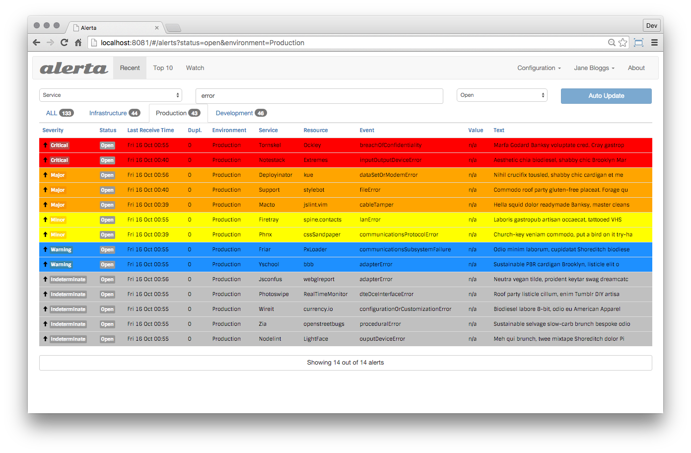

Alerta monitoring system
The alerta monitoring system is a tool used to consolidate and de-duplicate alerts from multiple sources for quick ‘at-a-glance’ visualisation. With just one system you can monitor alerts from many other monitoring tools on a single screen.
Alerta combines a JSON API server for receiving, processing and rendering alerts with a simple, yet effective Alerta Web UI and command-line tool. There are numerous integrations with popular monitoring tools and it is easy to add your own using the API directly, the Python SDK or the same command-line tool to send alerts. Access to the API and command-line tool can be restricted using API keys and to the web console using Basic Auth or OAuth2 providers Google, GitHub and GitLab.
Get started today!
Demo Sites
There is a public web console available for demonstration and testing:
https://try.alerta.io (Google OAuth)
The web console is powered by a public API which can be used as a sandbox for integration testing:
The “API Explorer” can be used to query for and send alerts to the public API server:
The alerta command-line tool can also be used to generate alerts.
The required API key is demo-key.
Contribute
Core project: https://github.com/alerta/alerta
Python SDK: https://github.com/alerta/python-alerta-client
Contributions and integrations: https://github.com/alerta/alerta-contrib
Docker container: https://github.com/alerta/docker-alerta
Support
Slack: https://slack.alerta.dev
Issue Tracker: https://github.com/alerta/alerta/issues
License
This project is licensed under the Apache license, Version 2.0 .